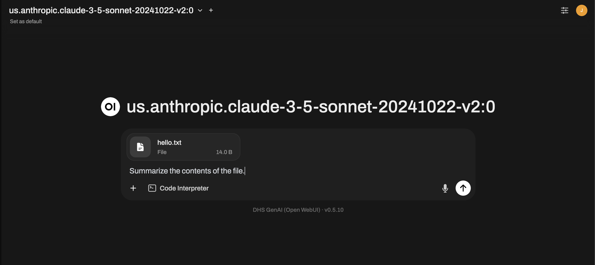
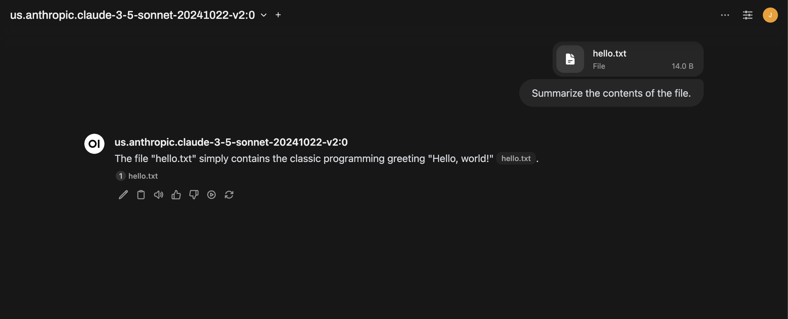
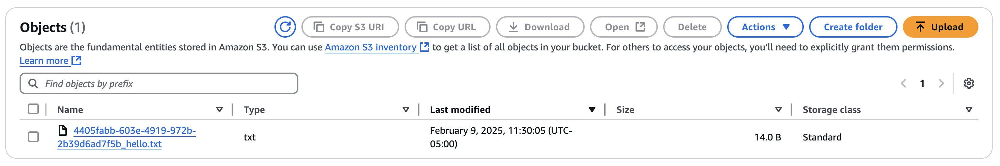
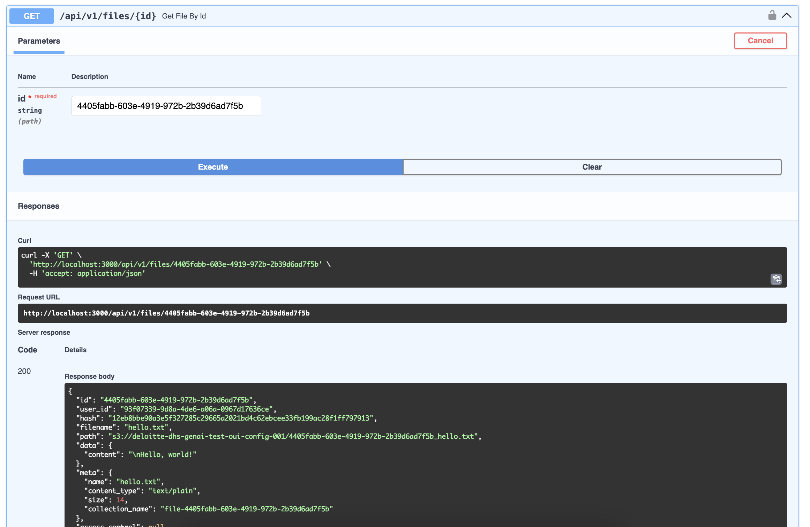

Este tutorial é uma contribuição da comunidade e não é suportado pela equipe Nullcore. Serve apenas como uma demonstração sobre como personalizar o Nullcore para o seu caso de uso específico. Quer contribuir? Confira o tutorial contribuinte.
🪣 Mudando para o armazenamento S3
Este guia fornece instruções sobre como mudar o padrãolocalarmazenamento na configuração aberta webui para a Amazon S3.
Pré -requisitos
Para seguir este tutorial, você deve ter o seguinte:
- Uma conta AWS ativa
- Uma chave de acesso AWS ativa e chave secreta
- Iam permissões na AWS para criar e colocar objetos em S3
- Docker instalado em seu sistema
O que é Amazon S3
Diretor do site da AWS:
"A Amazon S3 é um serviço de armazenamento de objetos que oferece escalabilidade líder do setor, disponibilidade de dados, segurança e desempenho. Armazene e proteja qualquer quantidade de dados para uma variedade de casos de uso, como lagos de dados, sites, aplicativos nativos da nuvem, backups, slots, slots, para o aprendizado de máquinas.
Para saber mais sobre o S3, visite:Página oficial da Amazon S3
Como configurar
1. Variáveis de ambiente necessárias
Para configurar esta opção, você precisa reunir as seguintes variáveis de ambiente:
| Variável de ambiente de webui aberto | Valor de exemplo |
|---|---|
S3_ACCESS_KEY_ID | ABC123 |
S3_SECRET_ACCESS_KEY | Supersecret |
S3_ENDPOINT_URL | https://s3.us-east-1.amazonaws.com |
S3_REGION_NAME | US-EAST-1 |
S3_BUCKET_NAME | My-Awomome-Bucket-Name |
- S3_ACCESS_KEY_ID: Este é um identificador para a chave de acesso da sua conta AWS. Você obtém isso no AWS Management Console ou da AWS CLI ao criar uma chave de acesso.
- S3_SECRET_ACCESS_KEY: Esta é a parte secreta do seu par de teclas de acesso AWS. É fornecido quando você cria uma chave de acesso na AWS e deve ser armazenado com segurança.
- S3_ENDPOINT_URL: Este URL direciona para o seu terminal de serviço S3 e normalmente pode ser encontrado na documentação do serviço da AWS ou nas configurações da conta.
- S3_REGION_NAME: Esta é a região da AWS, onde o seu balde S3 reside, como "US-leste-1". Você pode identificar isso no console de gerenciamento da AWS sob os detalhes do seu balde S3.
- S3_BUCKET_NAME: Este é o nome exclusivo do seu balde S3, que você especificou ao criar o balde na AWS.
Para uma lista completa dos URLs de terminal S3 disponíveis, consulte:Amazon S3 terminal regular
Veja todos osCloud StorageOpções de configuração aqui:Config de armazenamento em nuvem de webui
2. Corra-se-webui
Antes de lançarmos nossa instância do Open-Webui, há uma variável de ambiente final chamadaSTORAGE_PROVIDERPrecisamos definir. Esta variável diz a Webui Open Qual provedor você deseja usar. Por padrão,STORAGE_PROVIDERestá vazio, o que significa que o webui aberto usa armazenamento local.
| Provedor de armazenamento | Tipo | Descrição | Padrão |
|---|---|---|---|
local | str | Padrões de armazenamento local se uma string vazia (' ') é fornecido | Sim |
s3 | str | Usa a biblioteca de clientes S3 e as variáveis de ambiente relacionadas mencionadas no Amazon S3 Storage | Não |
gcs | str | Usa a biblioteca de clientes GCS e as variáveis de ambiente relacionadas mencionadas no Google Cloud Storage | Não |
Para usar o Amazon S3, precisamos definirSTORAGE_PROVIDERPara "S3", juntamente com todas as variáveis de ambiente que reunimos na etapa 1 (S3_ACCESS_KEY_ID, Assim,S3_SECRET_ACCESS_KEY, Assim,S3_ENDPOINT_URL, Assim,S3_REGION_NAME, Assim,S3_BUCKET_NAME
Aqui, também estou definindo oENVPara "Dev", que nos permitirá ver os documentos de arrogância do Webui, para que possamos testar ainda mais e confirmar que a configuração de armazenamento S3 está funcionando como esperado.
Docker Run -D \
-p 3000: 8080 \
-v aberto webui:/app/backend/data \
-e storage_provider = "s3" \
-e s3_access_key_id = "abc123" \
-e s3_secret_access_key = "SuperSecret" \
-e s3_endpoint_url = "https://s3.us-east-1.amazonaws.com" \
-e s3_region_name = "US-leste-1" \
-e s3_bucket_name = "my-awesome-bucket-name" \
-e Env = "dev" \
-Nome Open-Webui \
ghcr.io/open-webui/open-webui:Main
3. Teste a configuração
Agora que temos o webui aberto, vamos fazer upload de um simplesHello, Worldarquivo de texto e teste nossa configuração.

E confirme que estamos recebendo uma resposta do LLM selecionado.

Ótimo! Parece que tudo é trabalhado como esperado no Webui Open. Agora vamos verificar se o arquivo de texto foi realmente carregado e armazenado no balde S3 especificado. Usando o console de gerenciamento da AWS, podemos ver que agora existe um arquivo no balde S3. Além do nome do arquivo que carregamos (hello.txt) Você pode ver que o nome do objeto foi anexado a um ID exclusivo. É assim que o Open-Webui rastreia todos os arquivos enviados.

Usando os documentos de arrogância de Webui, podemos obter todas as informações relacionadas a este arquivo usando o/api/v1/files/{id}endpoint e passagem no ID exclusivo (4405FABB-603E-4919-972B-2B39D6AD7F5B).
